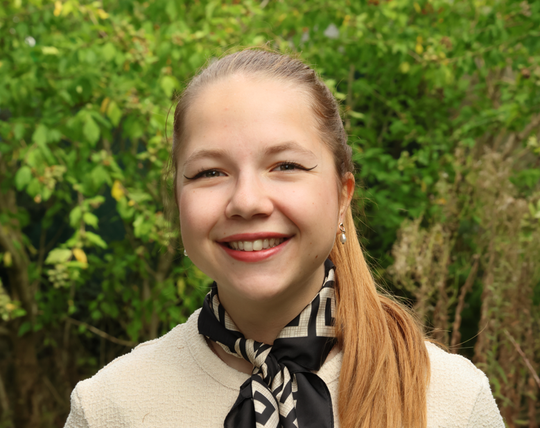
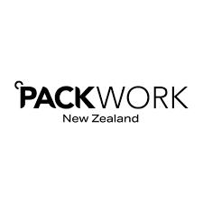
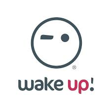
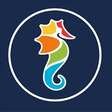
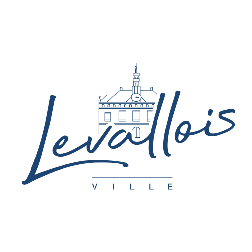
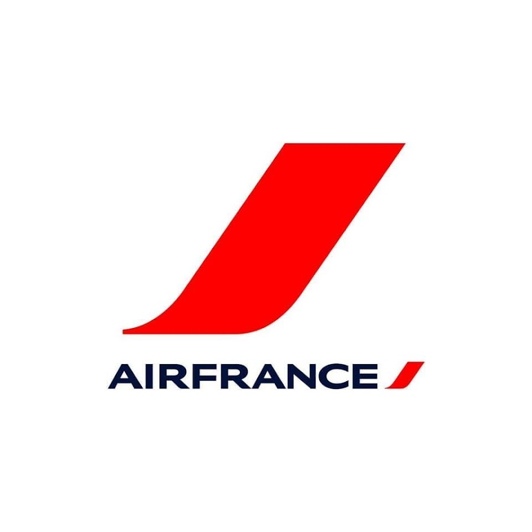
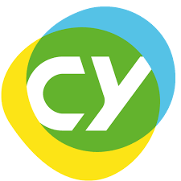

CDG
Charles-de-Gaulle
???
Votre compagnie
Future hôtesse de l'air, titulaire du Cabin Crew Attestation et disponible pour rejoindre un équipage dès aujourd'hui.

Depuis mon premier stage à Air France en 2018 (journée d'immersion avec des hôtesses de l'air et stewards, mises en situation d'incendies ou encore de violences à bord, simulateur de vol...), je sais que la cabine est mon environnement. Sept ans plus tard, je viens de valider mon Cabin Crew Attestation afin de prendre mon envol.
Entre les deux : un BTS Tourisme, une licence professionnelle Management du Tourisme International mention très bien, six mois dans une agence de voyages à Sydney, quatre mois de cueillette de kiwis en Nouvelle-Zélande, et la gestion quotidienne de visiteurs internationaux à Disneyland Paris. Le service multilingue et la sécurité des passagers font partie de mon ADN.
Tourisme, parcs, accueil, international. Chaque escale m'a appris à m'adapter, vite et avec le sourire.





› Cliquez sur un vol pour afficher le briefing détaillé.
Quatre formations, deux mentions, et la certification qui ouvre les portes du cockpit côté cabine.
Aeroschool — Nanterre (92)

CY Cergy Paris Université — Cergy-Pontoise (95)
Lycée Jean Moulin — Torcy (77)
Lycée Martin Luther King — Bussy-Saint-Georges (77)
Niveau anglais validé par le LILATE Personnel Navigant Commercial.
Le français reste ma cabine natale, l'anglais mon outil de travail, testé en agence de voyages à Sydney et en vergers néo-zélandais, et l'espagnol mon raccourci pour Madrid, Barcelone et l'Amérique latine.
Compétences acquises sur le terrain. Qualités confirmées par des collègues, des managers, et des visiteurs internationaux.
Voyager pour comprendre, grimper pour respirer, glisser pour décompresser.
Découverte du monde multiculturel avec l'Australie, la Nouvelle-Zélande, et beaucoup de prochaines escales à programmer.
Principalement du Bloc sur les différentes salles de Paris.
Quelques semaines en altitude chaque hiver pour entretenir l'équilibre et la résistance au froid.
Le moyen le plus simple de relier deux escales à pied et de respirer après un long courrier.
CCA en main, certification Lilate obtenue, disponible immédiatement. Je suis prête à devenir personnel navigant commercial.